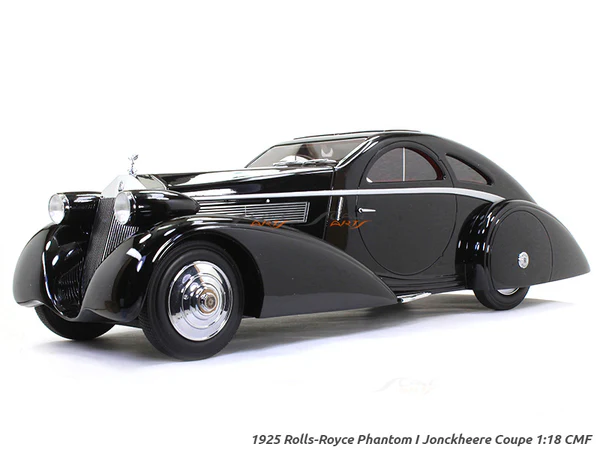

<html lang="pt-BR"></html>
<head>
    <meta charset="UTF-8">
    <meta name="viewport" content="width=device-width, initial-scale=1.0">
    <title>Rolls-Royce Phantom I: Luxo e Elegância em Quatro Rodas</title>
    <link rel="stylesheet" href="style.css">
</head>
<body>
    <header>
        <h1>Rolls-Royce Phantom I: Luxo e Elegância em Quatro Rodas</h1>
    </header>

    <main>
        <section>
            
            <h2>A Era de Ouro do Automobilismo</h2>
            <p>O Rolls-Royce Phantom I, lançado em 1925, representava o auge do luxo e da sofisticação no mundo automotivo.  Este carro icônico, símbolo de status e exclusividade,  marcou uma época de glamour e elegância,  transformando a experiência de dirigir em uma verdadeira jornada de prazer.</p>
        </section>

        <section>
            <h2>Especificações e Características do Phantom I</h2>
            <table>
                <thead>
                    <tr>
                        <th>Característica</th>
                        <th>Descrição</th>
                    </tr>
                </thead>
                <tbody>
                    <tr>
                        <td>Motor</td>
                        <td>6 cilindros em linha, 7.668 cc, 105 cavalos de potência</td>
                    </tr>
                    <tr>
                        <td>Transmissão</td>
                        <td>Manual de quatro velocidades</td>
                    </tr>
                    <tr>
                        <td>Suspensão</td>
                        <td>Eixos rígidos com molas semi-elípticas</td>
                    </tr>
                    <tr>
                        <td>Freios</td>
                        <td>Freios mecânicos nas quatro rodas</td>
                    </tr>
                    <tr>
                        <td>Chassi</td>
                        <td>Chassi de aço com estrutura tubular</td>
                    </tr>
                    <tr>
                        <td>Carroceria</td>
                        <td>Disponível em diversos estilos, como sedã, conversível, coupé e limousine</td>
                    </tr>
                </tbody>
            </table>
        </section>

        <section>
            <h2>Um Carro para a Elite</h2>
            <p>O Phantom I era um carro caro, reservado a uma elite privilegiada. Sua fabricação artesanal, materiais de alta qualidade e design elegante o tornaram um símbolo de status e sucesso. A Rolls-Royce, com sua reputação de qualidade e excelência, se consolidou como a marca de luxo por excelência.</p>
            <p>Clique para saber mais: <a href="https://en.wikipedia.org/wiki/Rolls-Royce_Phantom_I">Wikipedia</a></p>
        </section>
    </main>

    <footer>
        <p>© 2023 - História da Tecnologia</p>
    </footer>
</body>
</html>